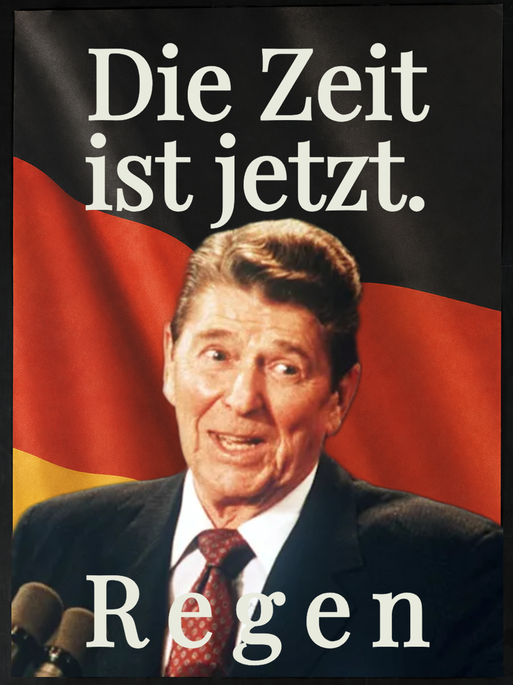
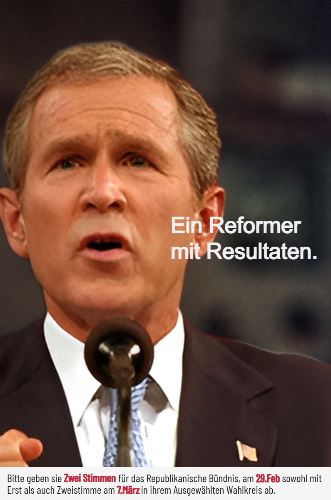

Material für Redaktion, Presse und Öffentlichkeit.
Hier finden Sie Hintergrundtexte, Logos, Wahlmotive, Faktenblätter und die aktuelle Pressemitteilung des Republikanischen Bündnisses.

Die wichtigsten Unterlagen.
Die Kernunterlagen sind einzeln verfügbar. Wer alles auf einmal braucht, lädt oben die vollständige ZIP-Datei.
Parteihintergrund
Geschichte, Auftrag, politische Grundidee und Aufbau des BÜNDNIS.
Herunterladen → PDFAktuelle Pressemitteilung
„Aus der EVU wird das Republikanische Bündnis“ in druckfertiger Form.
Herunterladen → PDFFaktenblatt
Eine kompakte Übersicht mit Namen, Führung, Sitz, Links und politischen Schwerpunkten.
Herunterladen → PDFBiografien der Parteiführung
Kurzprofile von Reinhold Regen, Georg B. Gush und Generalsekretär Micheal Romney.
Herunterladen →Logos und Kampagnenmotive.
Die Dateien können direkt heruntergeladen und für Berichterstattung, Veranstaltungshinweise und redaktionelle Beiträge verwendet werden.
Logo · transparent
PNG herunterladenLogo · Blau
PNG herunterladenWortmarke / Banner
PNG herunterladen
Reinhold Regen · Wahlmotiv
PNG herunterladen
Georg B. Gush · Wahlmotiv
PNG herunterladenMicheal Romney · Presseporträt
JPG herunterladenWird geladen …
Die aktuelle Meldung wird aus der BÜNDNIS-Zentrale geladen.
Sie brauchen etwas, das hier noch fehlt?
Für zusätzliche Motive, längere Lebensläufe oder organisatorische Rückfragen erreichen Sie die Pressestelle über den offiziellen Discord des BÜNDNIS.

{kind=link}
{kind=link}
{kind=link}
{kind=link}
{kind=link}
{kind=link}